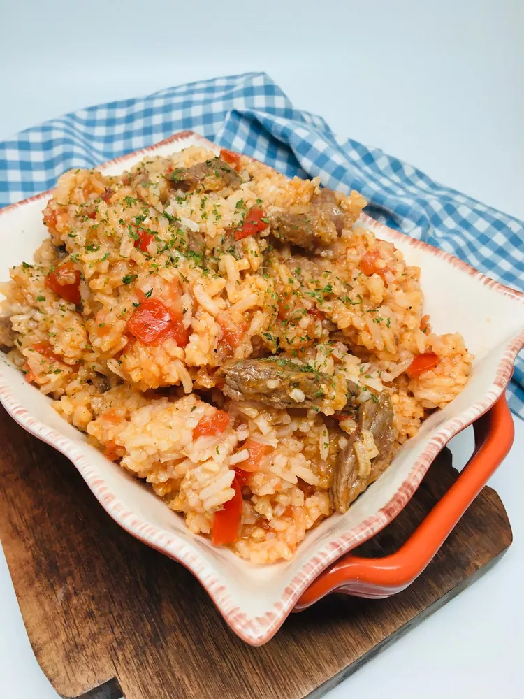

jollof rice

Description
West Africas most popular dish. I like to serve it as a side with my West African-style grilled beef (Suya), but it can also be a main course.
ingredients
- tomato sauce
- pepper
- garlic
- minced ginger
- water
steps
- Combine tomato, red bell pepper, habanero pepper, fresno chili, garlic, ginger, and water in a blender for the sauce. Blend on high until smooth and set aside.
- Heat olive oil in a saucepan over medium heat. Add onion and salt and sauté until onion starts to soften, 4 to 5 minutes. Clear space in the middle of the pan, add tomato paste, and sauté for 2 to 3 minutes. Season with paprika, curry powder, cumin, thyme, pepper, and turmeric; continue cooking for 1 to 2 minutes until everything is well combined.